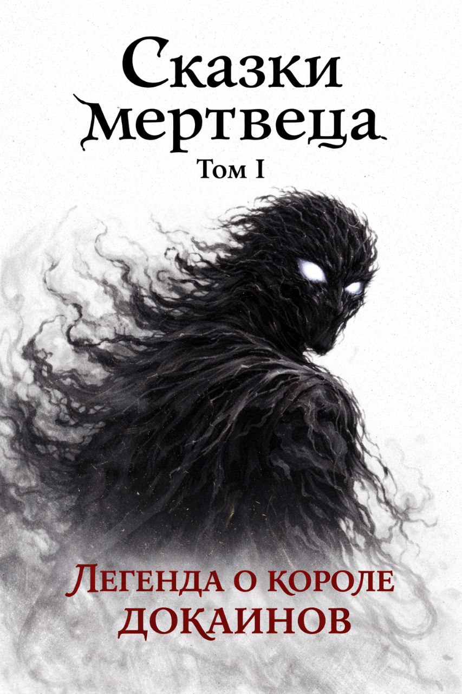

Том II · Материалы Архива III
Кризис Турунг-Гарха
Книга в работе. Энциклопедические материалы доступны при наличии III уровня Архива.
Изучить Том II →TODM / READ
Первая история уже публикуется. Начните читать здесь или откройте её на Author.Today.
К текущей книге
Том I · ПубликуетсяСейчас можно читать
Том I Публикуется
История о короле докаинов, войне двух народов и цене попытки изменить мир. На сайте доступны Пролог и главы 1–3; публикация книги продолжается.
Открыть страницу Тома I →Читать на TODM
Пролог и главы 1–3 опубликованы на сайте. За первое подтверждённое прочтение каждой части зарегистрированный читатель получает 20 ОА.
Коллекция
Эти книги ещё не открыты для чтения. Доступные материалы мира можно изучать на страницах Томов II и III.
Книга в работе. Энциклопедические материалы доступны при наличии III уровня Архива.
Изучить Том II →
Книга в работе. Страница тома и её разделы доступны при наличии III уровня Архива.
Изучить Том III →


Испытание Архива I
Испытание доступно без отметок чтения на сайте. В нём 10 вопросов; для прохождения нужно ответить правильно минимум на 7. Пересдавать можно без ограничений.
Открыть испытание